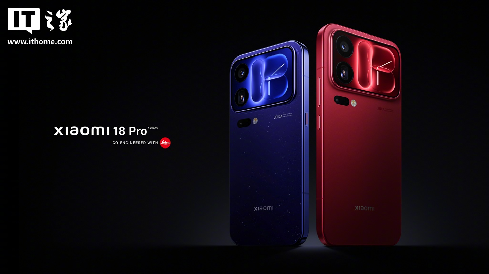
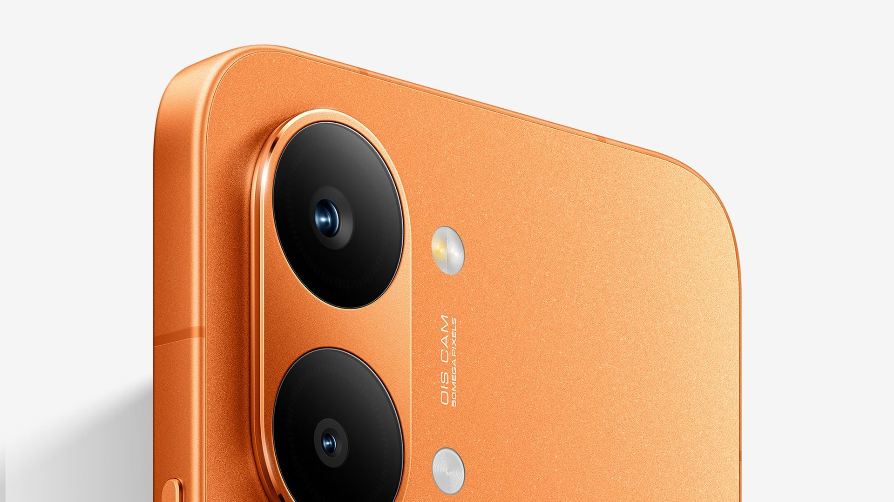
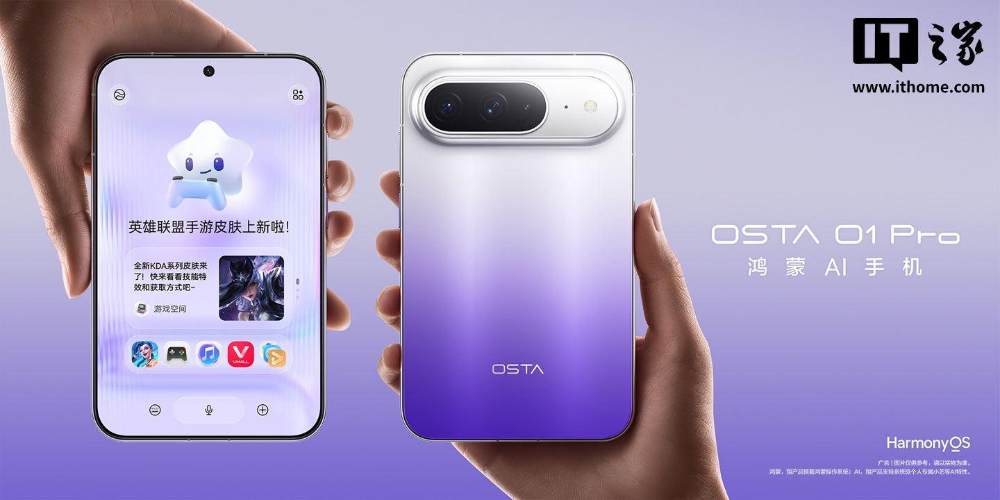
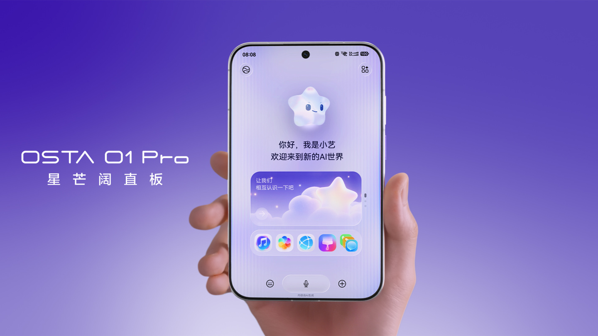
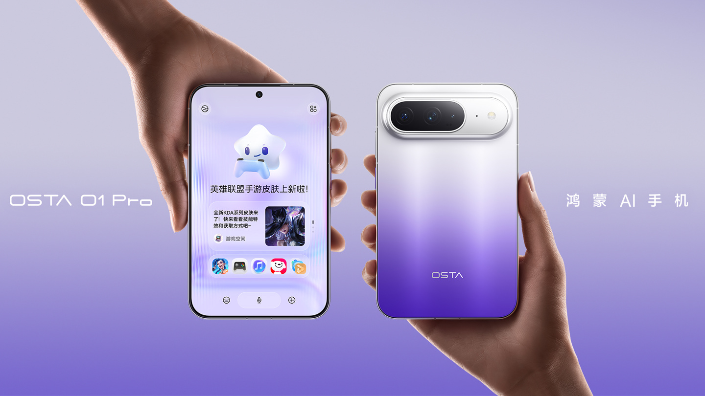
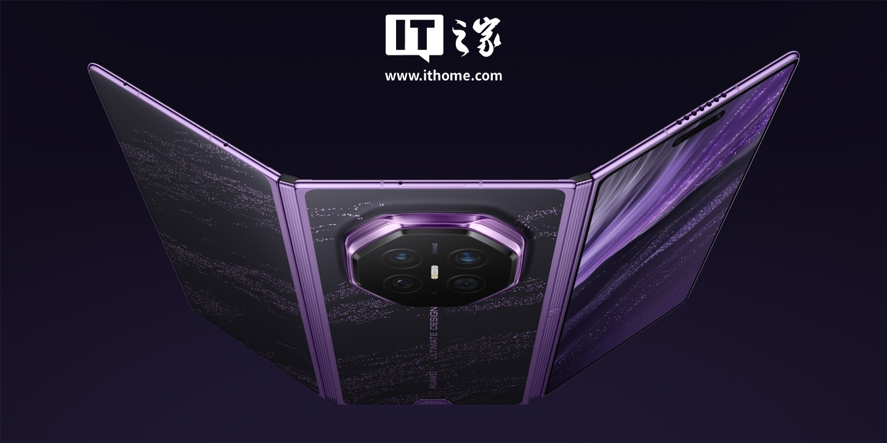
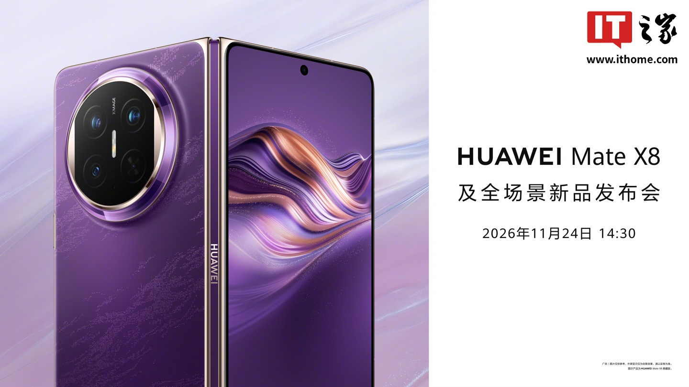
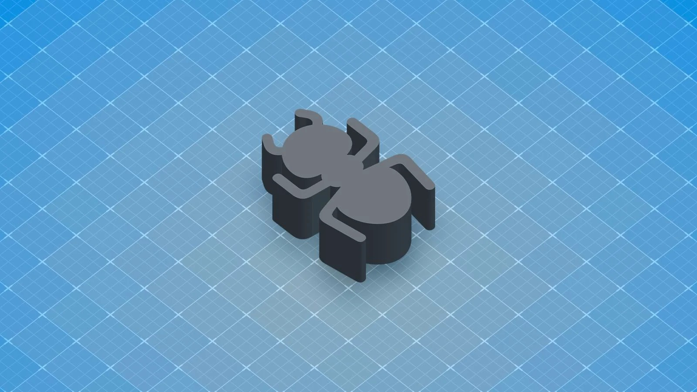
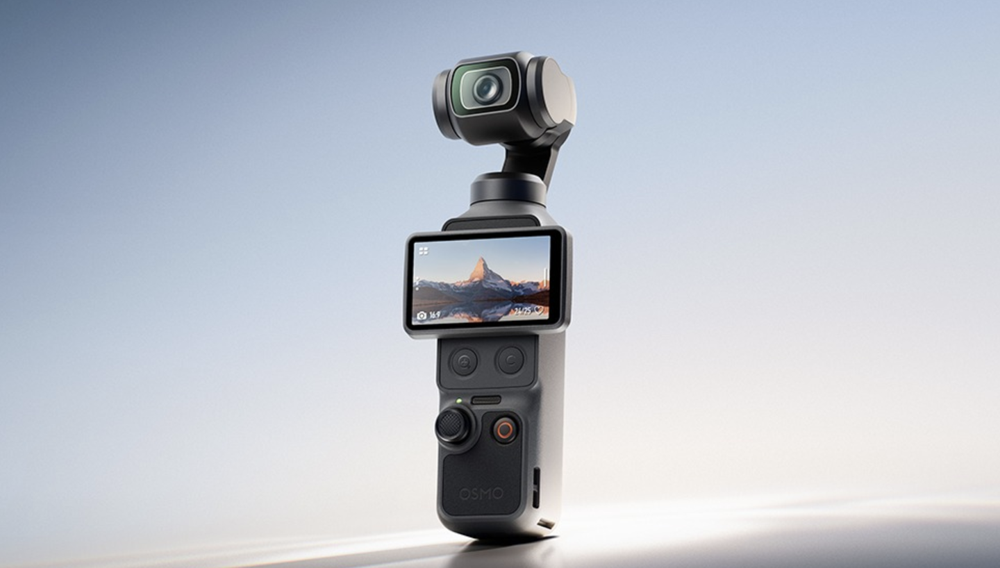
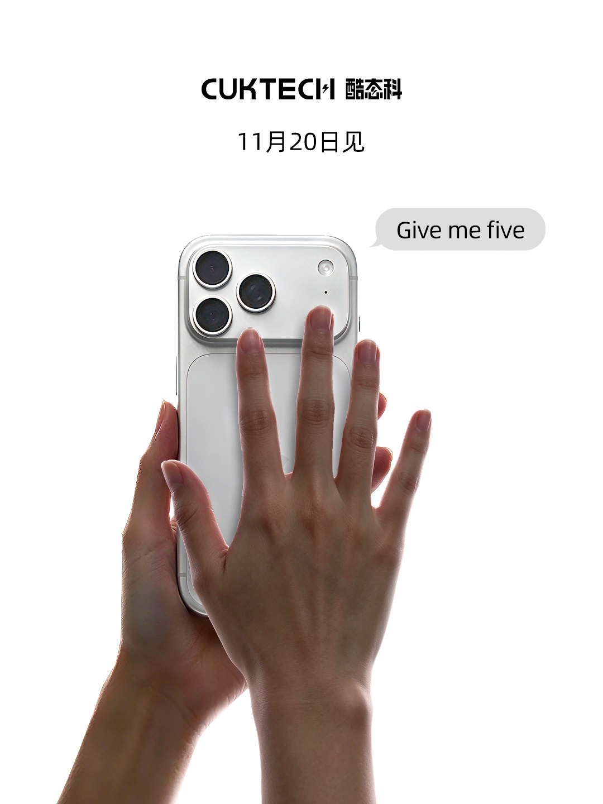

뉴스
기술의 변화, 매일 한눈에.
카메라 · 스마트폰 · AI, 해외 테크 소식을 모아 전합니다.
최근 발행2026-11-18
새로 들어온 소식

최신 뉴스
전체 4,446개 기사
샤프, AQUOS sense11 스마트폰 공개: 퀄컴 스냅드래곤 7s Gen 3 칩, 240Hz OLED 패널 탑재

Redmi Turbo 6 시리즈 스마트폰, 중요 인증 획득

2026 중국 국제 반도체 박람회에서 MediaTek, AI 전방위 적용 선보여

iPhone Duo, 외부 화면 얼굴 잠금 해제 기능 추가

iPhone 듀오 출시 3주 후, Apple Store 적응 완료

Huawei 스타라이트 OSTA O1 Pro 바 타입 스마트폰 출시: 3가지 색상 공개, 퍼플은 16GB 메모리 단독 제공

Huawei 스타라이트 OSTA O1 Pro 바 타입 스마트폰 외관 공개, 퍼플 그라데이션 강조

Huawei Star OSTA O1 Pro, "Harmony AI 스마트폰"으로 포지셔닝: 새로운 아이콘, 벨소리, 전용 AI 파트너 탑재

Huawei 싱망 OSTA O1 Pro 바 타입 스마트폰 주요 사양 공개: 기린 9030S, 무선충전 유지, 충전기 미포함
[영상] Huawei가 '조용히' 출시한 새 브랜드, 첫 스마트폰은 이렇게 생겼다, OSTA 싱망 O1 Pro 첫 사용기

[IT즈자 개봉기] Huawei 신규 서브 브랜드 OSTA O1 Pro 스마트폰 실물 촬영: 그라데이션 스타 퍼플, 독특한 바 타입 디자인

Huawei Mate XT 2 삼단 폴더블 스마트폰, HarmonyOS 7.0.0.115 업데이트로 StarLight 기술 기반 '선한 사마리아인 구조' 기능 추가

Huawei Mate X8 폴더블 스마트폰, 2세대 링롱 스크린 및 Kirin N세대 플래그십 칩 탑재, 10배 광학 줌 지원 전망

Huawei Mate X8 폴더블 스마트폰 실물 이미지 공개, 허강(何刚) 신제품 외관 디자인 상세 공개

Huawei Mate 90 시리즈 스마트폰, HarmonyOS 7.0.0.115 업데이트로 AI 바로가기 바 출시

Huawei Mate 90 시리즈 스마트폰 AI 바로가기 바, 새로운 인터랙티브 경험 공개, XRING OSTA O1 Pro 스타일과 완전히 달라
72억 4천만 엔, Foxconn Sony 반도체 차량용 카메라 모듈 사업 인수 추진

유명 웹사이트 다수 변조, 공격자 암호화폐 탈취 및 iPhone 침입

DJI 여러 제품 가격 인상: Osmo Pocket 4/4P/Nano 포함, 최대 560위안 인상

CukTech, 11월 20일 Apple iPhone 맥세이프 보조배터리 신제품 출시

중국 자체 개발 대형 수송 드론 '창잉-8', 3.5톤 화물 적재 '하늘의 중장비 트럭' 수송 투하 시험 완료
검색 결과가 없습니다
다른 검색어를 입력하거나 필터를 초기화해 보세요.